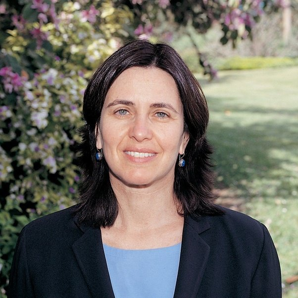

The Staff
Our laboratory is a collaborative environment, where students can develop expertise in multiple techniques. We strongly encourage students during their time in the lab to establish a complete understanding of both the biological context for their experiments as well as develop a command of the technical details of the experiments. We also strongly encourage students to see their work as part of the broad collaborative endeavor of science and place an emphasis on achieving reproducible results that contribute something of lasting value to this process.
John G. McKinnon
Dr McKinnon received his PhD from the University of Milano, Italy. He worked at the University of Firenze and the University of Milano before establishing the John G. McKinnonon Labs. He has received an AHA Scientist Development Grant and is an author on more than 35 peer-reviewed papers.
Samantha Rosati
Dr Rosati received her PhD from Australian National University. She worked at the Salk Institute and Washington University before taking a position at the McKinnon Labs.